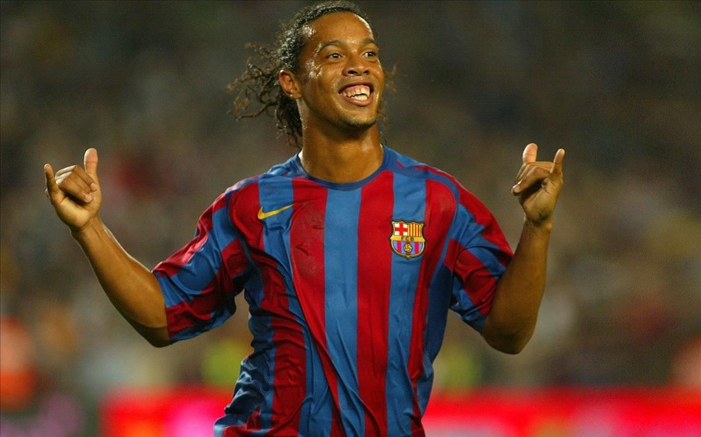

 ronaldinho
09/11/21
Contexto
ronaldinho es uno de los mejores jugadores de todo el mundo y es gracias a las ventajas que tiene sobre los demás jugadores con su talento, es algo que siempre me ha gustado de este jugador
Investigación
Siempre se destacó por su gran técnica, habilidad y calidad a la hora de controlar el balón, por la precisión en sus pases y tiros libres, así como también por sus regates. Fue apodado ‘la alegría del fútbol’ por a su amor por la pelota y por su contagiosa sonrisa dentro del campo de juego. Pocas veces se le vio enfadado o sin ganas de jugar. Su carisma sobre el césped sobresalía entre los demás jugadores. Ganó la Copa Libertadores, la Liga de Campeones, la Copa del Mundo, la Copa América y el Balón de Oro; y conquistó el planeta con su magia y su alegría para jugar al fútbol. Ronaldinho Gaúcho tenía todo lo necesario para convertirse en el mejor futbolista de la historia, pero la pasión por las fiestas, el amor por las mujeres y la falta de profesionalismo se lo impidieron.
Word. El video.Editorial. Lugar. Año. Página
Desarrollo
a lo largo de mi vida he tenido varios acercamientos a jugadores de futbol, los cuales soy su admirador, hay uno en especial que me marcó mucho ya que es lo que hacen que me mueve y me da pasión en el juego y ese es ronaldinho, es alguien a quien admiro mucho en la cancha y se me dio la oportunidad de conocerlo en vivo. también hay otros jugadores los cuales me han dado ciertas formaciones con sólo verlos jugar, como cr7

 Estructuras
Estructuras Tensegrity
Tensegrity